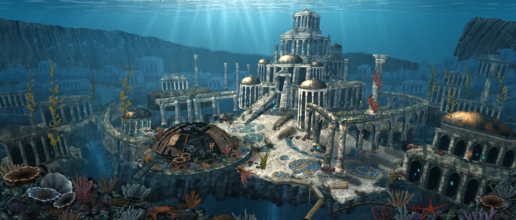

<!doctype html>
<html lang="en">
<meta charset="utf-8">
<meta name="viewport" content="width=device-width,initial-scale=1,viewport-fit=cover">
<title>Submerged Temple · Live shader</title>
<link rel="preload" as="image" href="scenery.webp" fetchpriority="high">
<link rel="preload" as="fetch" href="live.frag" crossorigin>
<style>
*{box-sizing:border-box}html,body,main{width:100%;height:100%;margin:0;background:#030c10;overflow:hidden}
main{position:fixed;inset:0;outline:none}
img,canvas{position:absolute;inset:0;width:100%;height:100%;object-fit:cover;object-position:56% center}
p{position:absolute;bottom:1rem;left:1rem;color:white;background:#091a21;font:1rem system-ui;padding:.5rem}p:empty{display:none}
</style>
<main tabindex="0" aria-label="Submerged Temple, live shader. Activate for fullscreen.">

<canvas hidden width="880" height="376" aria-label="Fish circling a submerged temple"></canvas>
<p role="alert"></p></main>
<script type="module" src="player.js"></script>
</html>
